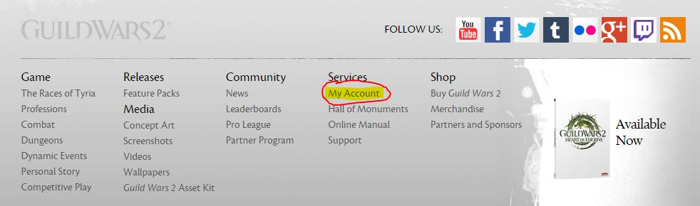
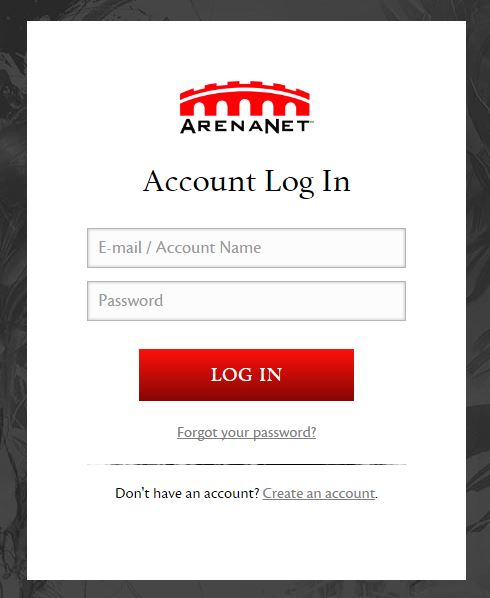
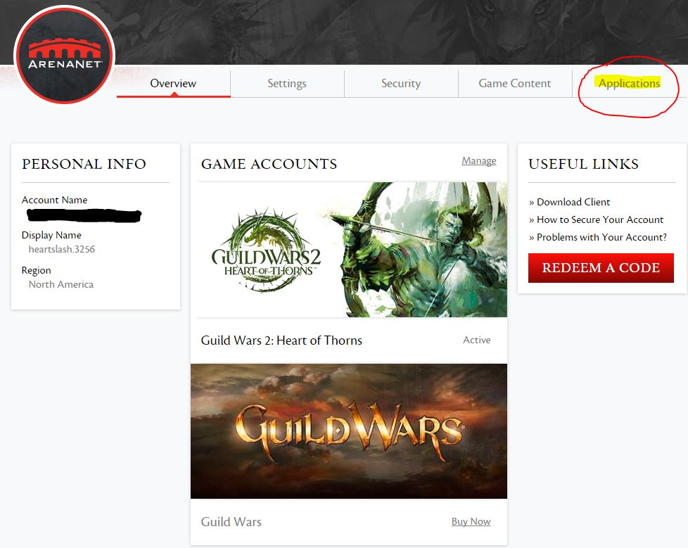
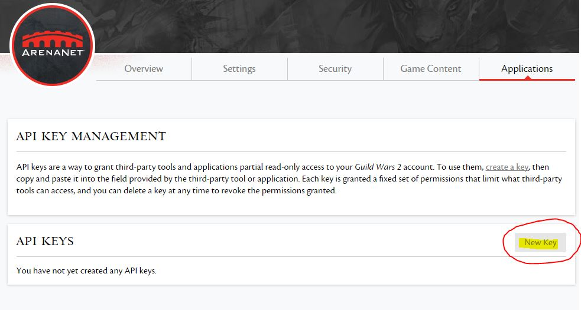
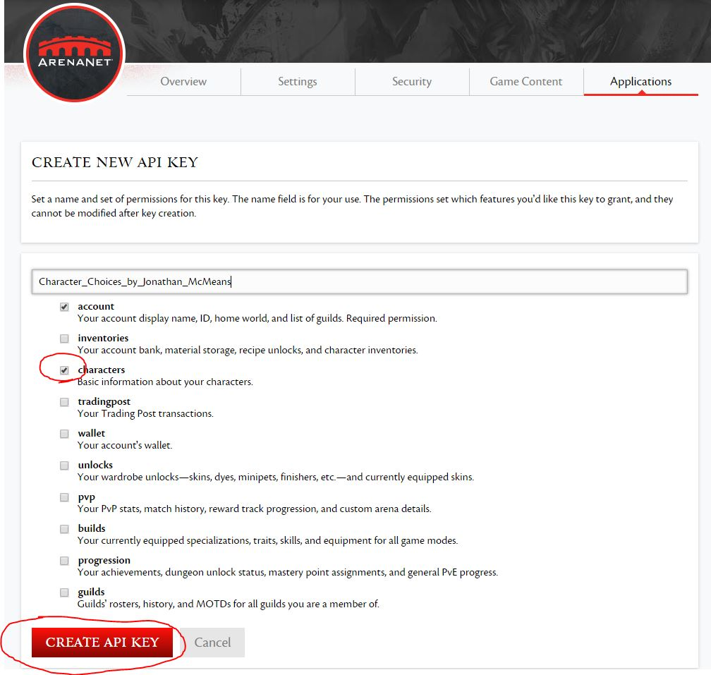
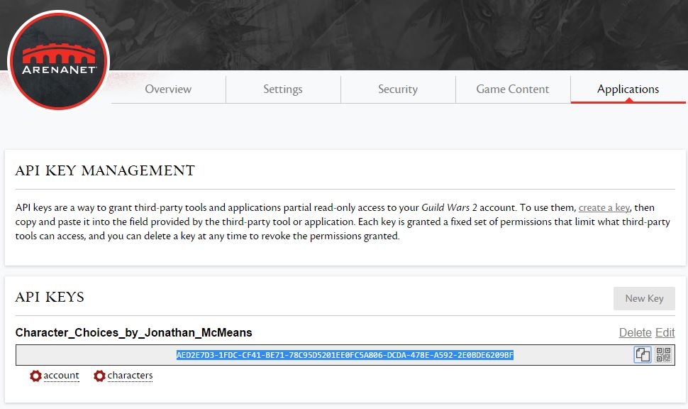

A simple project for CEG 3250 Data Analysis
Team Name: Team_Solo_Queue
Members: Jonathan McMeans
Guild Wars 2 is an MMORPG with various player choices available. Some choices are available at character creation (name, race, gender, profession), while others are available through in game content (crafting disciplines, weapon choice, specializations, order). Players can choose any combination of these to fully create their unique character. Names are simply strings of characters, and gender is male or female. Race is one of five options: Charr, Asura, Sylvari, Human, and Norn. Profession is one of nine options: Elementalist, Necromancer, Mesmer, Ranger, Thief, Engineer, Guardian, Warrior, and Revenant. The professions can be grouped by armor type, the first three are light-armor, the second three are medium-armor, and the last three are heavy armor. Weapons are profession specific, such that an Elementalist cannot use a sword but can use a dagger, while the Warrior can use the sword but not the dagger. Each profession has its own unique set of specializations, broken down into five core specializations and one elite specialization. Each specialization contains three tiers of effects to choose from, with each tier having one passively granted and one out of three actively granted. These are the minor and major traits, respectively. In total, there will be three minor traits and three major traits chosen for each specialization, and each character can choose three specializations, totaling to eighteen traits. There are three orders for players to choose from (Durmand Priory, Vigil, Order of Whispers) by going through the character’s personal story. There are eight crafting disciplines to choose from: Huntsman, Weaponsmithing, Artificing, Leatherworking, Armorsmithing, Tailoring, Jeweling, and Chef. Each character can choose two of these disciplines, with the option of paying for a premium type purchase to increase this number.
The data would be collected using the Guild Wars 2 API along with player participation. Players will have to
generate a unique API code in order to allow the site to collect their information about the choices they have made.
I plan to ask my guilds as well as make a post on the forum asking for people to use the site. The data would come in
a format similar to CSV to allow for fairly easy parsing. The trick will be to use the API effectively in order to
transform number codes into proper terminology. Given that enough people participate in my data collection, there
should be ample data and I plan to gather all character information for each character in the account, giving a large
number of attributes for each player record. This will allow for the detailed analysis of whether choice matters in
character creation or if certain combinations will be the majority of player decisions.
The major question will be if certain attributes are linked stronger together than others, such as race, profession,
and crafting disciplines. Are these three linked in any way such that a prediction can be made about the crafting
disciplines a player will choose given a race and profession? This type of information is useful as it can restrict the
complexity for future games. Players like choices, but do the choices need to be so complex? If a majority of Human
Warriors choose Weaponsmithing and Jeweling as their crafting disciplines, creating a Human Warrior could then unlock
those disciplines at character creation. This would reduce the information needed to be stored, as the Human Warrior
could then just link to a Weaponsmithing/Jeweling crafting discipline combination. It will also be interesting to see
the connections players make between race and profession. Will there be any connection at all? If there is, the
character creation could then be simplified further. I would use a linking node graph that would weight each connection
based on the number of times it appears. As players enter their data, the graph would update to reflect the most
recently entered data. As the data set increases, the change in the graph will be minimal for each new player, and
conclusions can then start to be formed.
Step 1: Log in to your Guild Wars 2 account.


Step 2: Click Applications tab.

Step 3: Create a new key.

Step 4: Generate a key with account and character permissions. Note that only character permissions will be used,
the account permission is required to generate the key. A name can be given at the top if you would like.

Step 5: Your key has been generated! Copy the key to use on this site to add your character data to the current data.
In the picture below, the key is highlighted in blue. Note that this is a key generated to demonstrate the steps required,
the key has been deleted and will not work.

Enter the API key to add your character data to the graph